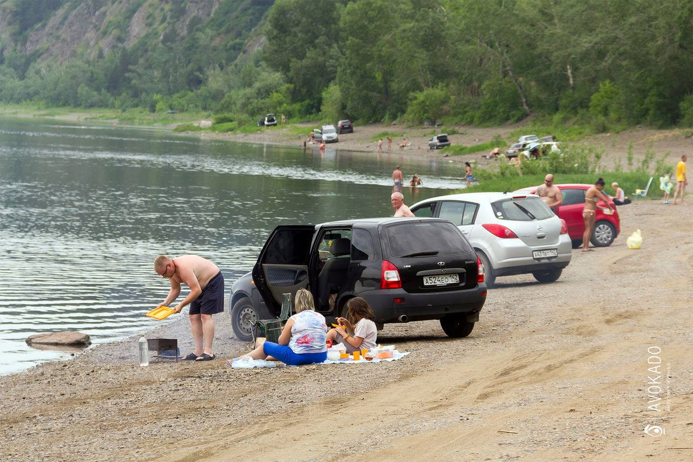

Напоминаю моим законопослушным читателям, что уже почти 8 лет, с декабря 2009 года…

«Использование прибрежной защитной полосы водного объекта, водоохранной зоны водного объекта с нарушением ограничений хозяйственной и иной деятельности - влечет наложение административного штрафа
- на граждан в размере от трех тысяч до четырех тысяч пятисот рублей;
- на должностных лиц - от восьми тысяч до двенадцати тысяч рублей;
- на юридических лиц - от двухсот тысяч до четырехсот тысяч рублей.»
Статья 8.42. КоАП
Ширина водоохранной зоны рек или ручьев устанавливается от их истока для рек или ручьев протяженностью:
- до десяти километров - в размере пятидесяти метров;
- от десяти до пятидесяти километров - в размере ста метров;
- от пятидесяти километров и более - в размере двухсот метров.
Статья 65 Водного Кодекса
По словам инспекторов ГИМС, по факту штрафуют за парковку у кромки воды, то есть ниже линии розлива реки в весеннее половодье.